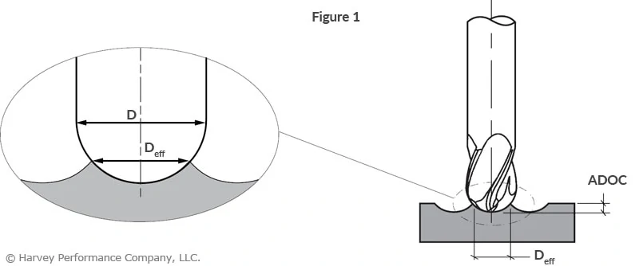

Effective Ballnose Diameter Calculator
Rev: 001

\( D_{eff} = 2 \times \sqrt{ADOC \times (D - ADOC)} \)
\( D_{eff} \): Effective Diameter (mm)
\( ADOC \): Axial Depth of Cut (mm)
\( D \): Tool Diameter (mm)
Calculate \( D_{eff} \)
mm
Calculate \( ADOC \)
mm
Calculate \( D \)
mm
Calculate
* This calculator provides theoretical values only. Actual effective diameter may vary based on cutting conditions and tool geometry.